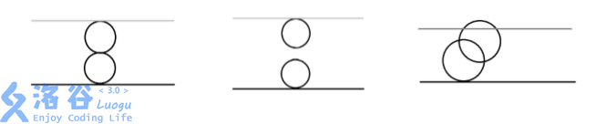

【每日算法】P3958奶酪
题目背景
NOIP2017 提高组 D2T1
题目描述
现有一块大奶酪，它的高度为 $h$，它的长度和宽度我们可以认为是无限大的，奶酪中间有许多半径相同的球形空洞。我们可以在这块奶酪中建立空间坐标系，在坐标系中，奶酪的下表面为 $z = 0$，奶酪的上表面为 $z = h$。
现在，奶酪的下表面有一只小老鼠 Jerry，它知道奶酪中所有空洞的球心所在的坐标。如果两个空洞相切或是相交，则 Jerry 可以从其中一个空洞跑到另一个空洞，特别地，如果一个空洞与下表面相切或是相交，Jerry 则可以从奶酪下表面跑进空洞；如果一个空洞与上表面相切或是相交，Jerry 则可以从空洞跑到奶酪上表面。
位于奶酪下表面的 Jerry 想知道，在不破坏奶酪的情况下，能否利用已有的空洞跑到奶酪的上表面去?
空间内两点 $P_1(x_1,y_1,z_1)$、$P_2(x_2,y_2,z_2)$ 的距离公式如下：
$$\mathrm{dist}(P_1,P_2)=\sqrt{(x_1-x_2)^2+(y_1-y_2)^2+(z_1-z_2)^2}$$
输入格式
每个输入文件包含多组数据。
第一行，包含一个正整数 $T$，代表该输入文件中所含的数据组数。
接下来是 $T$ 组数据，每组数据的格式如下： 第一行包含三个正整数 $n,h,r$，两个数之间以一个空格分开，分别代表奶酪中空洞的数量，奶酪的高度和空洞的半径。
接下来的 $n$ 行，每行包含三个整数 $x,y,z$，两个数之间以一个空格分开，表示空洞球心坐标为 $(x,y,z)$。
输出格式
$T$ 行，分别对应 $T$ 组数据的答案，如果在第 $i$ 组数据中，Jerry 能从下表面跑到上表面，则输出 Yes，如果不能，则输出 No。
输入输出样例 #1
输入 #1
3
2 4 1
0 0 1
0 0 3
2 5 1
0 0 1
0 0 4
2 5 2
0 0 2
2 0 4
输出 #1
Yes
No
Yes
说明/提示
【输入输出样例 $1$ 说明】

第一组数据，由奶酪的剖面图可见：
第一个空洞在 $(0,0,0)$ 与下表面相切；
第二个空洞在 $(0,0,4)$ 与上表面相切；
两个空洞在 $(0,0,2)$ 相切。
输出 Yes。
第二组数据，由奶酪的剖面图可见：
两个空洞既不相交也不相切。
输出 No。
第三组数据，由奶酪的剖面图可见：
两个空洞相交，且与上下表面相切或相交。
输出 Yes。
【数据规模与约定】
对于 $20\%$ 的数据，$n = 1$，$1 \le h$，$r \le 10^4$，坐标的绝对值不超过 $10^4$。
对于 $40\%$ 的数据，$1 \le n \le 8$，$1 \le h$，$r \le 10^4$，坐标的绝对值不超过 $10^4$。
对于 $80\%$ 的数据，$1 \le n \le 10^3$，$1 \le h , r \le 10^4$，坐标的绝对值不超过 $10^4$。
对于 $100\%$ 的数据，$1 \le n \le 1\times 10^3$，$1 \le h , r \le 10^9$，$1 \le T \le 20$，坐标的绝对值不超过 $10^9$。
题解：
#include<bits/stdc++.h>
using namespace std;
const int N = 1010;
int T,n,f[N],a[N],b[N];
double x[N],y[N],z[N],h,r;
int fd(int x){
return x == f[x] ? x : f[x] = fd(f[x]);
}
void un(int x,int y){
f[fd(x)] = fd(y);
}
double s(double x) {
return x*x;
}
int main(){
cin >> T;
while(T--){
cin >> n >> h >> r;
double R = 2*r;
int to=0,ro=0;
for(int i = 1; i <= n; i++){
f[i] = i;
cin >> x[i] >> y[i] >> z[i];
for(int j = 1; j < i; j++){
if(sqrt(s(x[i]-x[j]) + s(y[i]-y[j]) + s(z[i]-z[j])) <= R){
un(i,j);
}
}
if(z[i] + r >= h) a[to++] = i;
if(z[i] - r <= 0) b[ro++] = i;
}
bool fl = 0;
for(int i = 0; i < to; i++){
for(int j = 0; j < ro; j++){
if(fd(a[i]) == fd(b[j])){
fl = 1;
break;
}
}
}
if(fl)cout << "Yes\n";
else cout << "No\n";
}
return 0;
}